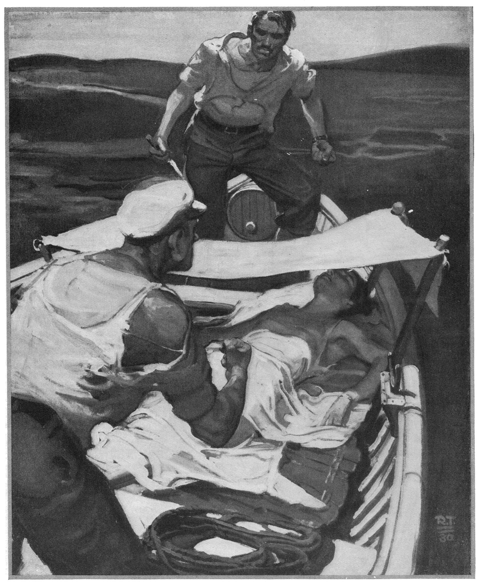

The boat lay becalmed, drifting on the slow, deadly monotonous swell; from cloudless sky the sun beat down, a pitiless sun whose ferocious rays made wretchedness a gasping misery and added to the pangs of thirst.
And in this swaying, sun-blistered boat, two men crouched, watching each other in silence, above a still and shrouded form.... Both were young, both haggard with suffering and privation, but there all likeness ended, for the one, slim and dark, was clad in weather-stained yet fashionable tweeds; the other, a big fellow, blue-eyed, golden-haired, was rigged as a sailor; and he it was who spoke at last in voice harsh and querulous:
“When do we drink?”
The slim man glanced at the watch on his wrist and answered hoarsely: “In—exactly fifty-five minutes.”
“Be damned to that!” growled the big man. “I’m parched! I’m in—agony.”
“So am I!” croaked the slim man. “And what of Miss Wellerby?”
“She’s asleep and out of her misery for a bit. But I’m awake, curse it, awake and dyin’ for a drop o’ that water as you’re hoggin’! Ah, you may scowl, Mr. John Farrant, Esquire, but I’m goin’ t’drink.”
“Hogging, d’you say?” muttered Farrant, glancing on the muffled shape at his feet. “Is it hogging to keep a fool from guzzling the water that may save the three of us? Pull yourself together; try to be a man.”
“Look here, you——”
“Silence!” snarled Farrant, gesturing towards the sleeper.
The big man clenched knotted fists and muttered a passionate curse. “Now listen t’me,” said he, in voice scarce above a whisper, but with menace in every line of his body, “there’s water a-plenty in that keg.”
“Yes, but think, man; confound you—think! We may drift like this for days—maybe longer! And we have a woman with us, God help her! Anyway, it’s up to us to ration ourselves, especially in water. When we drink, we drink together. Come, if you’re an English sailorman, act like one.”
“Right-o, mister ruddy gentleman! Here’s an English sailor as is goin’ to drink now, ah—and hearty too!”
“You will drink half a pannikin of water at twelve o’clock—with us, and not before!”
“Wot’s a-goin’ to stop me?”
“This!” answered Farrant, and whipped a hunting knife from his belt. “Strange,” said he, nodding at it, “that in all that confusion on board I should strap on this knife—quite unconsciously! I brought it to skin game, but if necessary I shall certainly use it on—I think you said your name was Joe Trasker?”
“Ay, that’s me!” growled the big man bitterly. “Just Joe Trasker, a deck hand! But you’re a toff, eh—like her! And it’s both on ye ag’in’ me. But I got as much right to live as you or her—and you’re both ag’in’ me! Oh, I know your game—a sip o’ water all round when I’m awake, but soon as I’m asleep——”
“Liar!” said Farrant, and sheathed his knife contemptuously.
“Liar, am I? Well, how’m I to know as you don’t get at the water when my eye’s off ye—or feed it to her?”
“Look at me, man! Look at her! Do we seem any better than you? I’m suffering as much as you are, perhaps more. And as for—her——”
“Ah, her! You’re sweet on her, that’s wot! I see—I know, if she don’t—and you’d do anything for—her!”
“And so would you, Joe, if it comes to the pinch.”
“Not me!” growled Trasker.
“Well, I believe you would, Joe, just because you are a sailorman. I rather liked you, Joe, until this cursed suspicion got you—looked on you as a friend. And do I look the sort of cur that would cheat a friend; do I? Anyhow, we drink half a pannikin of water three times a day—and that’s that!”
So fell silence again, save for the slap and tinkle of the wavelets and the monotonous creaking of the boat’s timbers, Trasker crouching, yellow head between clenched fists, while Farrant’s eager gaze quested the vast desolation of sea. At last, stifling a groan, he bent and touched the sleeper.
“Miss Wellerby,” said he, croaking hoarsely, “luncheon, ho! Two biscuits and a sip or so of water.”
The sleeper moved, sighed and sat up. A face sweet with youth, despite haggard eyes and droop of shapely mouth, a lovely face, aged yet ennobled by suffering endured with a resolute patience.
“I was dreaming,” said she wistfully, glancing around that immensity of ocean. “I dreamed we were safe—at home in—our dear England.”
“Let’s hope it’s a happy omen,” said Farrant, carefully measuring out the precious water. “Let’s drink to home—to England, God bless it!”
She took the cup in shaking fingers but, meeting Farrant’s gaze, drank slowly with little sips and sighs of ecstasy. The mug empty, he refilled and passed it to Trasker who, swallowing the water in three sucking gulps, tossed back the mug and, muttering evilly, turned his back....
Came darkness, palpitant with wonder of stars, and all about a brooding silence.
And Farrant, huddled in the stern, roused ever and anon to peer towards Joe Trasker in the shadowy bow, straining his ears for stealthy movement, his fingers gripping the haft of his knife.... It was after one of these upstartings that a hand touched him, a small slim hand that found and clasped his own.
“Mr. Farrant,” she breathed, “I’m afraid of that man—more than thirst or hunger—dreadfully, horribly afraid!”
“No, no,” he whispered back, giving that clinging hand a reassuring pat. “Joe’s all right, really, and—I’m here!”
“Yes. I have thanked God for you—often. May I call you John?”
“Oh, please do.”
“Then, will you call me Eve?”
“Yes, Eve.”
“He, that man, wants to drink all the water, doesn’t he?”
“Why, no; not all. The poor devil’s thirsty and a bit queerish—a touch of the sun, but he’s all right, really.”
“But I heard you threaten him with your knife.”
“But I thought—weren’t you asleep, Eve?”
“Oh, no; I was too thirsty.” Here he patted her hand again and all but raised it to his lips. “John, if I asked you for water now—just one sip—would you give it me?”
“Don’t!” he gasped. “Don’t ask me!”
“If I begged, implored—would you?”
“No!” he whispered, between clenched teeth. “I couldn’t; it—it wouldn’t be just; it wouldn’t be fair—to Joe. So, Eve, my poor, dear girl, don’t ask——” He stopped, for with sudden movement she had drawn his hand to her hot lips and now pillowed her tear-wet cheek on it.
“God was good—very kind—to send me adrift with such a man as you.”
So this night passed, but.... Ensued long hours, days of stifling heat with a raging thirst mocked by the cool lapping of water; dreadful nights of an ever-growing anguish and hopelessness. Farrant’s strength began to fail; Trasker’s great body seemed to shrink and shrivel; Eve’s wistful eyes seemed larger in the haggard oval of her face, but her smile was ready and her spirit valiant as ever.
Trasker raved and threatened her, or lay huddled in silent misery, his fever-bright eyes so watchful and furtive that there came times when Farrant dared not sleep until he saw those fierce-watching eyes shut and was assured that Joe truly slumbered. It was such a night again and Farrant sat, heavy head against a thwart, when a feeble arm drew his aching head to a more comfortable resting place.
“John,” she whispered, “the water’s nearly gone.”
“Yes. God help us!”
“Well, I—don’t think I shall need—any more, and—oh, John, I’m glad! But you must live to——”
“Not without you.”
“Listen, John, dear! Today when you fell asleep—the man tried—to get at the water again; hurt me a little, dear. I think he’s gone mad. So, John, after I’m gone, if he—tries to steal all the water—my dear, you must—kill him with your knife.”
“Eve—oh, Eve, if you go, I shall need my knife for better purpose.”
“No! Oh, John, no—not that!”
“I’ll not endure this agony alone, Eve. There; hush! Try to sleep. Perhaps in the morning—a ship, dear.”
“Then you sleep, too; here, close by me, John.”
“No I—I must—watch——”
But in this night of horror, of weakness, physical and mental, Farrant slept indeed, and started up feeling for his knife—then caught his breath and lay shaking and appalled, for the weapon was gone.
Day was breaking; all about him was a ghostly light. He looked towards the bow, and his jaw dropped. Save for Eve and himself the boat was empty; Trasker’s sprawling bulk had vanished!
Slowly, weakly, Farrant got to his knees, for there beside Eve’s slim foot lay his knife, its keen blade horribly dimmed, and beyond this, great gouts of blood. Now, looking upon her sleeping face, hollow-cheeked and ghastly in the dawn-light, and remembering her words, Farrant covered his eyes and rocked back and forth, his weakened frame shuddering convulsively. At last, conquering this spasm, he dropped the knife overboard, and with a corner of the sail swabbed away those dreadful, murderous stains; this done, he sank back.
Day broke; up rose the cruel sun; the girl stirred feebly and whispered his name. Then his arms were about her, the pannikin of water at her lips and, thus drinking, she glanced up at him in speechless gratitude.
Sitting up, she glanced fearfully towards the bow and thereafter sat utterly still and meek while Farrant set out their poor breakfast. They ate and drank, neither looking at the other and both keeping their heads averted from that empty place in the bow.
“I think,” said Farrant at last, speaking with an effort, “we’ve more chance to pull through—now.”
“Oh!” she whispered; and then: “Yes!”
“Anyhow, you won’t suffer so much—while the water lasts.”
The long day wore on and they were strangely silent; and with every hour Farrant’s weakness grew upon him, for his soul was a shaken, trembling thing. And she watched him in an ever-deepening trouble.
“Eve!” said he faintly, breaking a long, haunted silence. “I’ve dreamed—a ship, a steamer—coming to us. Look—look! Over there.”
“No, John,” she answered. “It was only a dream; close your eyes and dream again.”
From fevered sleeping he was roused by hands that shook him, a voice that, sobbing, called upon his name.
“John—oh, John, it’s true! There is a ship at last—coming to us. God has answered our prayers.”
“Prayers?” he whispered, coming feebly to his elbow. “Yes; but what—what is that—that white thing tucked under the thwart yonder—a paper?”
She crept forward, took the thing, looked at it and, uttering a broken, joyous cry, came scrambling back and was beside him on her knees, clasping him in the yearning passion of her arms.
“Oh, John, you didn’t——! Look; read it!”
Then, staring on this crumpled scrap of paper, Farrant saw these words roughly scrawled:
Two is better than one so here’s one going out to give two a chance. So good night and good luck to youfrom JoeP. S. Am using knife in case of sharks.
“Eve!” Farrant’s arms clasped her with sudden new strength. “Oh, my Eve, I thought—ah, thank God!”
“And oh,” she whispered, “God bless Joe!”
“Yes!” cried Farrant. “Yes; for by heaven he was a better man than I.”
Verily there be times when man, soaring above his finite humanity, becomes very nearly divine.